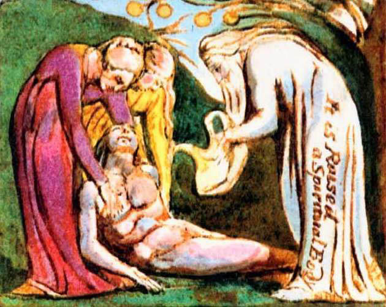

Ne doğarsa doğsun Fani Oluştan,
Yükselebilsin diye Özgür bir nesil,
Emilmek zorunda Toprak tarafından,
Öyleyse ne yapmalı seninle şimdi?
Utanç ve Gururdan varolan Cinsler
Estiler sabahleyin ve gece öldüler,
Fakat Merhamet Ölümü Uykuya çevirdi
Çalışmak ve ağlamak için dirildi Cinsler.
Sen, benim Fani yanımın Annesi,
Zulümle biçimledin kalbimi
Ve sahte, kendini aldatan gözyaşlarınla,
Bağladın Gözlerimi, Kulaklarımı ve Burun deliklerimi.
Sıvadın dilimi de duygusuz balçıkla
Ve jurnalledin beni Fani Hayata,
Ben ki özgür kılındım İsa’nın Ölümüyle,
Öyleyse ne yapmalı seninle şimdi?

**Tinsel bir Beden olarak büyütülüyor